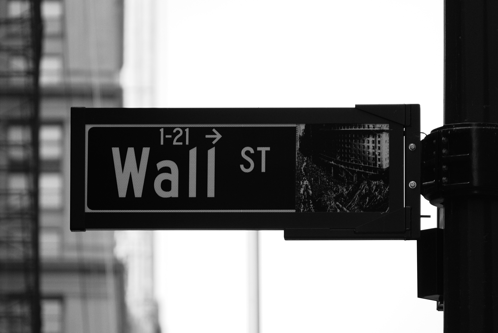
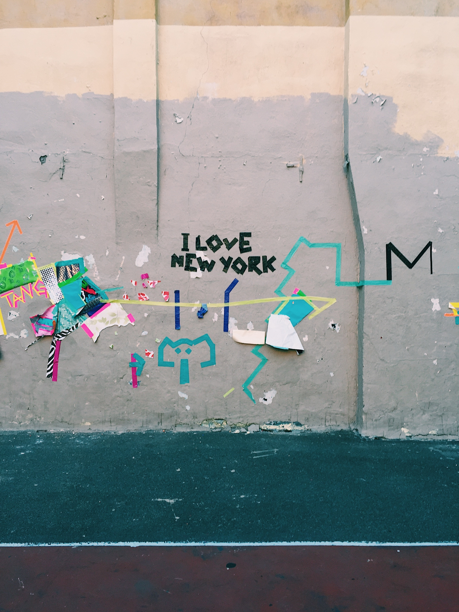
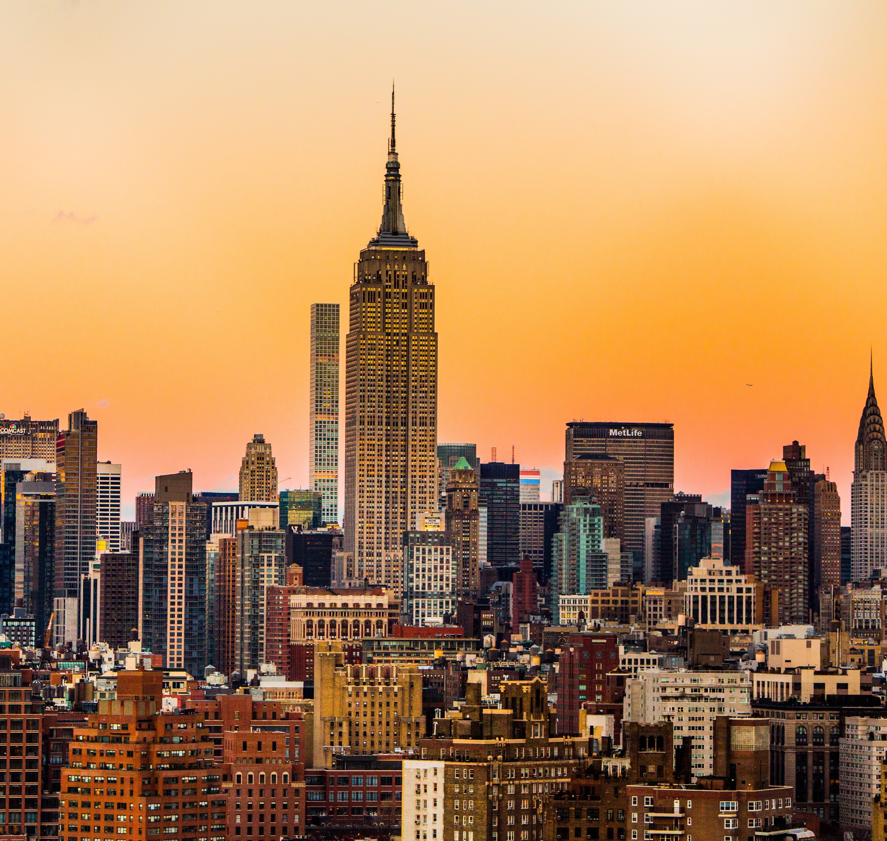
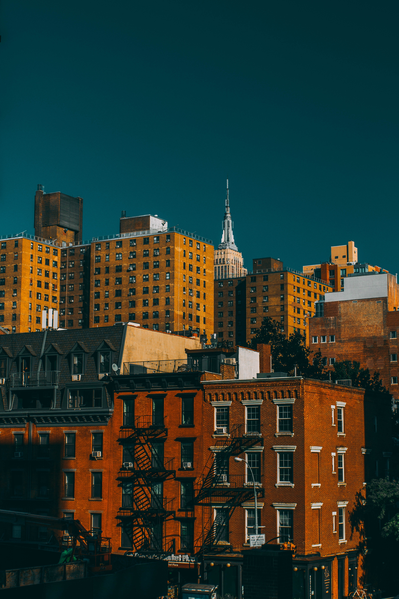
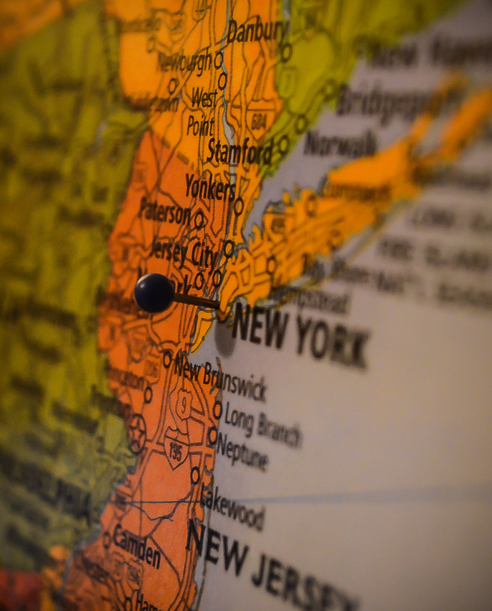

Visit a city today.
No other city in the world throbs with as much energy as New York City. This multicultural epicenter is one giant tapestry of nationalities, each one bringing its unique touch to New York’s art, architecture, cuisine and entertainment.
Find hotels in central New York with our comprehensive guide featuring listings and reviews. There is something for all tastes and budgets, whether cheap accommodation or luxury five-star or boutique hotels, chain hotels, family friendly hotels, traditional New York hideaways or specialist accommodation. Have a look at the deals on offer and book your hotel room now!
Experience the best that this colorful and lively city has to offer and make sure you do not miss any of the important New York City’s sights and attractions - museums, parks, world famous landmarks and other must-see attractions that NYC offers. We can make a 3 days plan for you!
Times Square, this world famous traffic intersection is also known as the Crossroads of the World, The Great White Way and the center of Manhattan. It is located at the junction between Broadway and 7th Avenue and is surrounded by important buildings displaying bright neon signs at all hours of the day and night.
Empire State Building is perhaps New York's greatest landmark, although it is no longer the world's tallest building it is still visited by over 3 million people annually. The Empire State was inaugurated in 1931 and is located on 5th Avenue, at the time it broke many world records and was nicknamed the 8th Wonder of the World. The building has also featured in countless movies including King Kong and Sleepless in Seattle.
Brooklyn Bridge is one of the country's oldest suspension bridges; it was constructed in 1883 and spans the East River connecting Manhattan to Brooklyn. It was designed by John Augustus Roebling who had designed a number of other important bridges in the US.